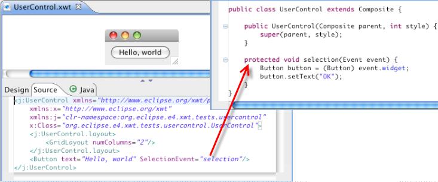
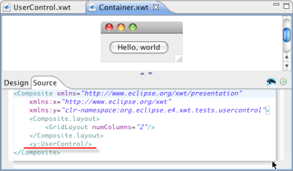

Although XWT is bundled in e4, it is in fact designed, developed and tested in classic eclipse environment. It can be used in applications on top of SWT/Jface with or without eclipse platform. So the integration with standard SWT application is really straight forward.
This paragraph explains the integration concept of XWT in an existing SWT application: how an existing classic SWT applications using XWT. XWT provides some APIs to load a UI component as a child of an existing Composite via the class XWT.
The customized UI "UserControl" contains a Button with a selection event, that clicking the button changes the button content from 'Hello, world' to 'OK'.

XWT supports directly integrating user-defined SWT widgets in your declarative UI. It's quite easy to implement in XWT XML. You need only to declare the application class path and name in the place where you want. See the example below, it using <y:UserControl />, y is the class path specified in the root as xmlns:y = "clr-namespace:org.eclipse.xwt.test.usercontrol".

Run the Container application and click the button. Implicitly, UserControl application is invoked.